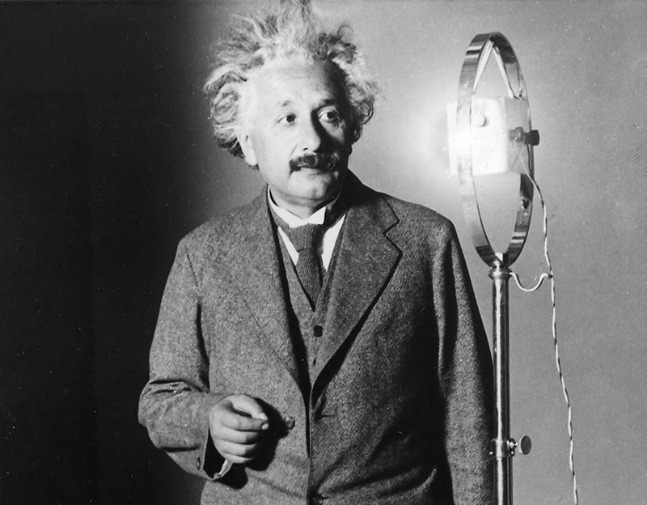

Physicist, Scientist (1879-1955)
10 Things You Didn't Know About Albert Einstein:
- He renounced his German citizenship when he was 16.From an early age, Albert Einstein loathed nationalism of any kind and considered it preferable to be a “citizen of the world.” When he was 16, he renounced his German citizenship.
- He married the only female student in his physics class.Mileva Marić was the only female student in Einstein’s section at Zürich Polytechnic. She was passionate about math and science, and was an aspiring physicist in her own right.
- He had a 1,427-page FBI file.In 1933, the FBI began keeping a dossier on Albert Einstein, shortly before his third trip to the U.S.
- He had an illegitimate baby. Einstein’s future wife Mileva gave birth out of wedlock to a baby girl.
- He paid his first wife his Nobel Prize money for a divorce.
- He married his first cousin.Elsa, the second Mrs. Einstein, was the daughter of Albert’s mother’s sister, making them first cousins. They were also second cousins, as Elsa’s father and Albert’s father were cousins. Her maiden name was Einstein.
- He was a civil rights activist before the civil rights movement.
- His son was institutionalized for most of his adult life. Albert’s second son, Eduard, whom they affectionately called “Tete,” was diagnosed with schizophrenia and institutionalized for most of his adult life.
- He had a rocky friendship with “the father of chemical warfare.
- He had an affair with an alleged Russian spy.
"The important thing is not to stop questionning. Curiosity has its own reason for existing."
~Albert Einstein
If you have time you should read more about this incredible human being on his
Wikipedia entry.